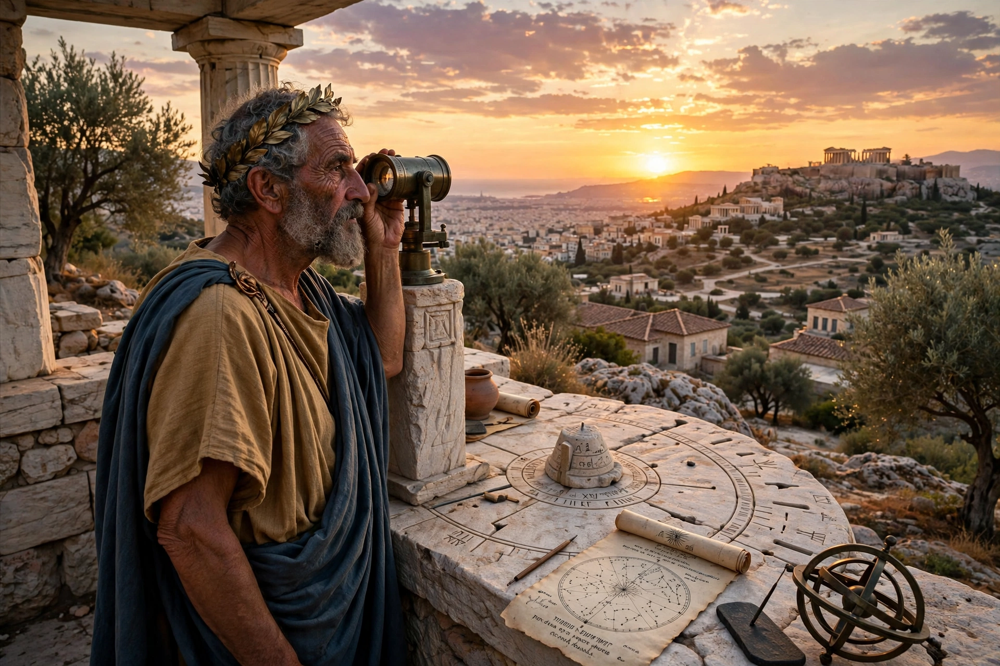

| Born | 5th century BCE, Athens |
|---|---|
| Known for | The Metonic cycle (19-year lunisolar cycle) |
| Fields | Astronomy, mathematics, geometry |
Meton of Athens (Greek: Μέτων ὁ Ἀθηναῖος; gen.: Μέτωνος) was a Greek mathematician, astronomer, geometer, and engineer who lived in Athens in the 5th century BCE. He is best known for calculations involving the eponymous 19-year Metonic cycle, which he introduced in 432 BC into the lunisolar Attic calendar.

Meton observed that 19 solar years are almost exactly equal to 235 lunar months (6,940 days), so that the phases of the Moon recur on the same dates of the year every 19 years. The cycle allowed Greek astronomers to construct a calendar that reconciled the lunar months with the solar year by intercalating seven extra months in each 19-year period. The cycle was known earlier in Babylonian astronomy, and it survives today in the computation of the date of Easter (via its "golden number") and in the Hebrew calendar.
Meton set up a heliotropion (solstice observation instrument) on the Pnyx hill in Athens, whose foundations are still visible. He was satirised by Aristophanes in The Birds (414 BCE) as a town-planning geometer, and appears also in tradition as one of the first Greeks to determine the dates of equinoxes and solstices accurately. The lunar crater Meton is named after him.